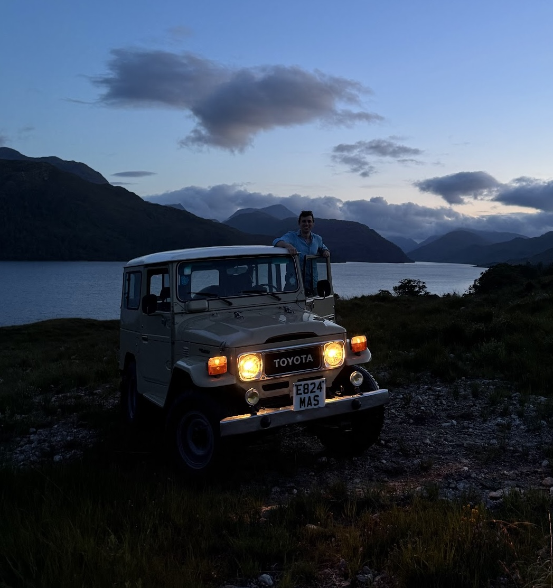
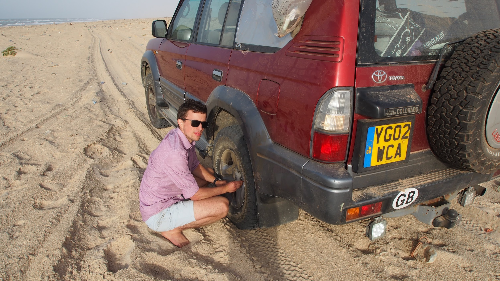

FJ40
Overlanding in a classic vehicle adds an extra dimension to any trip. Will you make it? Will you end up stranded? In 2024 I purchased an FJ40 and have taken it through the Scottish highlands, over to France and throughout the UK. Affectionatly named Lola, she has only ever failed me once, but was back up and running soon after.

Crossing the Sahara
My first, and to this day my biggest overlanding trip was crossing the Sahara desert with 3 friends in a 90 Series Land Cruiser. The aim was to get from London, to The Gambia and back as a test drive for a trans continental trip I was planning the following year, from London to ape Town. This unfortunatly never happened, but is still very much on the cards for a future adventure. We got stuck, got lost, had guns waived in our face and sweated like there was no tomorrow (the AC brokein the first 24hours).